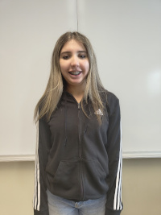
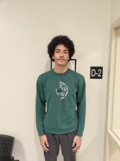
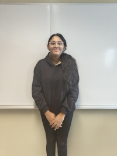

Environmental Program Coordinator
- Role: Plans and manages sustainability initiatives and environmental projects.
- Interests: Climate action, environmental education, community outreach.
- Contribution: Ensures projects are well-organized, impactful, and aligned with the organization’s mission.

Community Engagement Specialist
- Role: Builds partnerships with volunteers and local organizations.
- Interests: Social impact, teamwork, public communication.
- Contribution: Strengthens community involvement and increases participation in sustainability programs.

Environmental Research Assistant
- Role: Conducts research and analyzes environmental data.
- Interests: Data analysis, environmental science, innovation.
- Contribution: Provides evidence-based insights that guide effective environmental strategies.

Education and Outreach Assistant
- Role: Supports workshops and sustainability awareness campaigns.
- Interests: Teaching, sustainability, youth engagement.
- Contribution: Communicates environmental topics clearly and inspires responsible consumption.